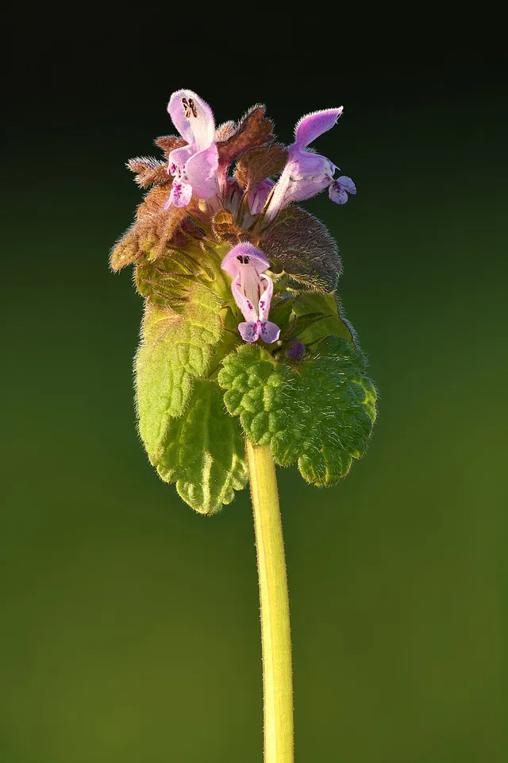

Purple dead nettle
Purple dead nettle is a wild green you can forage from February to May in Northeast, Southeast, Midwest and Great Plains. Square stems and soft heart-shaped leaves turning purple at the top, with small pink-purple hooded flowers. No sting.

When is purple dead nettle in season in the United States?
Purple dead nettle is usually in season February to May. Timing shifts with weather, latitude and altitude.
Where does purple dead nettle grow in the United States?
Purple dead nettle grows in Alabama, Arkansas, Colorado, Connecticut, Delaware, District of Columbia, Florida, Georgia, Illinois, Indiana, Iowa, Kansas, Kentucky, Louisiana, Maine, Maryland, Massachusetts, Michigan, Minnesota, Mississippi, Missouri, Montana, Nebraska, New Hampshire, New Jersey, New York, North Carolina, North Dakota, Ohio, Oklahoma, Pennsylvania, Rhode Island, South Carolina, South Dakota, Tennessee, Texas, Vermont, Virginia, West Virginia, Wisconsin. Regions: Northeast, Southeast, Midwest, Great Plains.
How do you recognise purple dead nettle?
Square stems and soft heart-shaped leaves turning purple at the top, with small pink-purple hooded flowers. No sting.
How do you harvest purple dead nettle?
Pinch off young tips and top leaves before the plant flowers, when they are tender and mild. Leave the roots and lower leaves so it regrows. Pick away from roads, sprayed verges and dog-walking paths.
How do you eat purple dead nettle?
Raw in salads or blended into pesto.
How do you store purple dead nettle?
Dry for tea.
What is purple dead nettle good for?
Vitamin C, Iron & calcium.